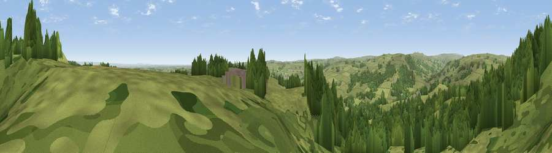

Viewpoint near Summerbridge
#10786 in England · top 13% of its area beats it · near SummerbridgeThe view, rendered

A 360° render of this exact spot computed from the terrain model, tree cover and land cover — summer colours, afternoon light, calibrated against photographs of famous viewpoints. Real trees, hedges and buildings will differ in detail.
The panorama
Grey silhouette: terrain skyline in each direction (720 bearings, Earth curvature and refraction included). Dashed green: skyline with trees (+15 m) and buildings (+8 m) as obstacles. Blue strip: how far the ground is visible on each bearing.
Where the view opens
Wedge length = distance to the farthest visible ground on that bearing (vegetation-aware). Rings at 10, 25 and 50 km.
What fills the view
52% grassland · 46% woodland · 1% built-up
Angular shares of the visible panorama (visual magnitude), not map area. Landscape diversity 0.33 (0–1 Shannon).
Key numbers
More beautiful places nearby
The staircase of upgrades: each row has a higher view potential than everything closer. Driving times are estimates from straight-line distance, calibrated against real road routing — check an actual route before setting out.
| Place | Direction | Drive | Score |
|---|---|---|---|
| Viewpoint near Summerbridge | N · 0 km | ~1 min | 62.2 |
| Viewpoint near Summerbridge | NE · 0 km | ~2 min | 66.0 |
| Viewpoint near Low Laithe | NNE · 2 km | ~5 min | 66.1 |
| High Crag Ridge | W · 4 km | ~10 min | 67.6 |
| How Hill | ENE · 8 km | ~16 min | 72.9 |
| Viewpoint near Bewerley | W · 8 km | ~16 min | 75.7 |
| Viewpoint near Bewerley | W · 8 km | ~16 min | 76.8 |
| Viewpoint near Otley | S · 19 km | ~33 min | 77.5 |
54.06770, -1.68481 · source: screening · position refined by local search. Computed location — check access rights before visiting.